What if you could earn consistently through farming without doing any single work on the farm?
Here's How To Make An Extra ₦54,000, ₦186,000, ₦210,000, ₦535,000… and even up to ₦5Million Every 60 days Without Touching a Single Farm Tool.
Dear Reader,
This is your opportunity to be a LAZY FARMER making millions monthly.
Yes, it is now possible!
Before I go into details…
Here's a sad truth.
Every year, thousands of Nigerians dive into farming, hoping to escape the harsh economy and unstable government policies…
They chase what everyone needs a stable income stream.
Unfortunately, the result most time is failure.
You see, to succeed with farming, you must have these 3 crucial things.
Deep technical knowledge or experience to successfully manage crops, seasons, pests, and unpredictable farming challenges.
And if your farm produces well, you need reliable buyers at good prices; otherwise, all your effort could be wasted because it might lead to losses or inconsistent earnings.
Significant investment to set up and maintain the farm for profitability, money most people underestimate or simply don't have.
This is why in 2024, we created…
Farm2wealth
Now, before I reveal how you can skip these struggles (and even outperform those with years of farming experience)…
I need you to know this:
This is not a Ponzi scheme.
This is not MLM.
And it's definitely not one of those “get-rich-quick” tricks that leave you broke and disappointed.
This is the Lazy Man's Way to Riches through farming.
Why?
Because with this Farm2wealth, you don't need any farming experience. You don't lift a single farm tool. You don't manage any stressful farm processes.
That's right.
You can be in the comfort of your home, office or business and still earn more than many who sweat under the sun daily.
In simple words, at Farm2Wealth, your money does the hard work for you.
You own the farm,
We do all the work for you,
And every 60 days, you watch your bank account grow fatter, without stress, without sweat.
Here's How it Works
Some of our farm activities
Testimonials And Customer Earnings


 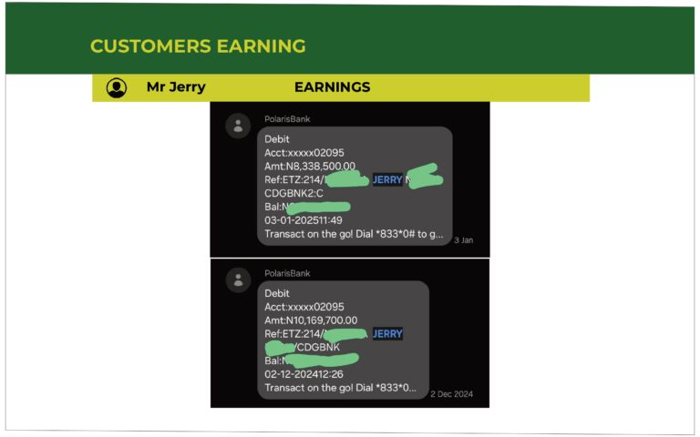
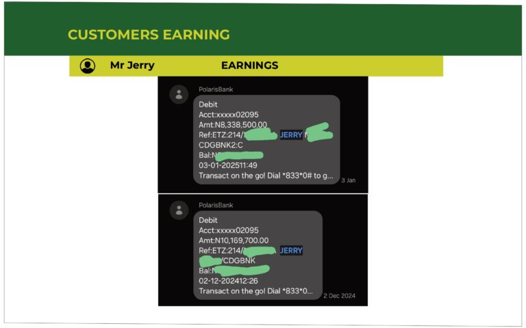
 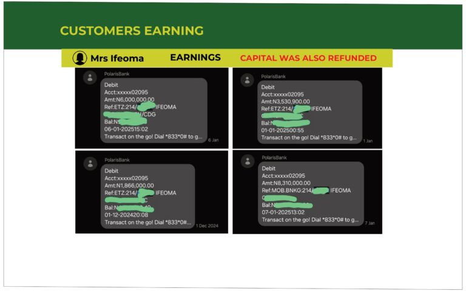
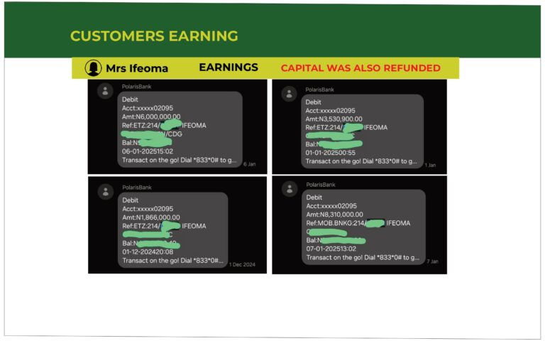
 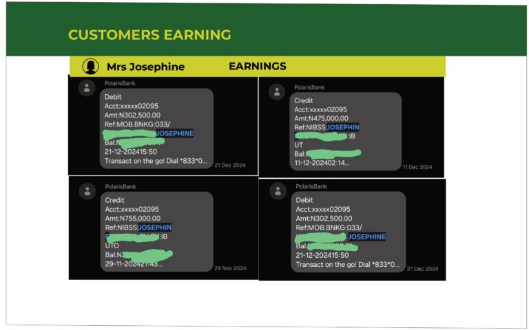
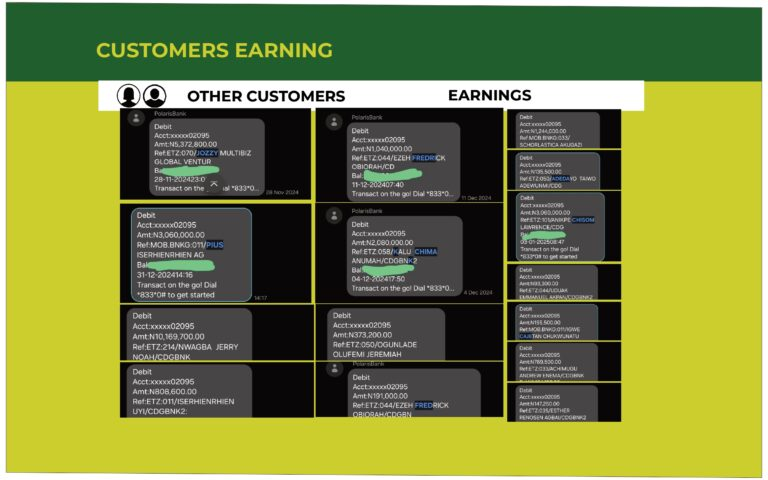
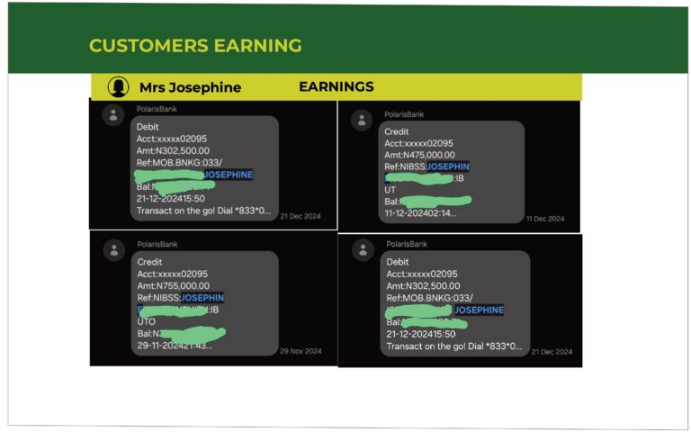
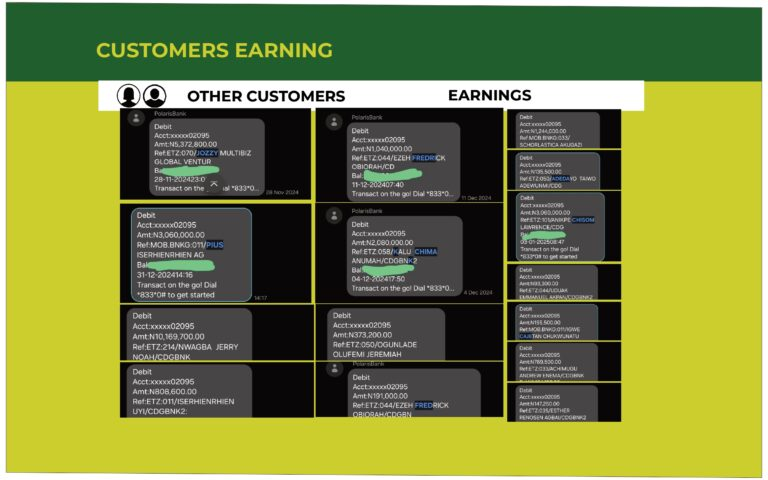
 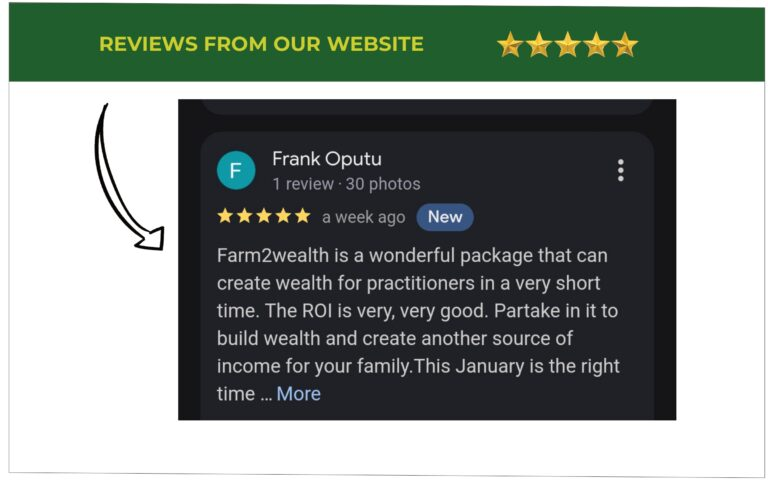
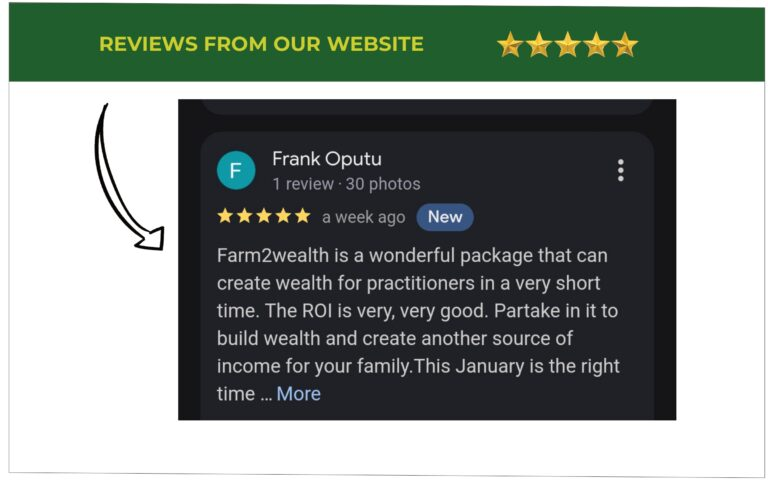


 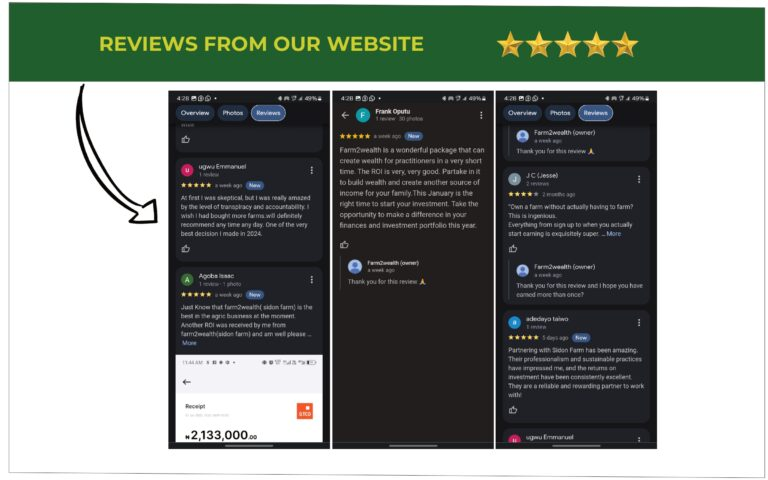
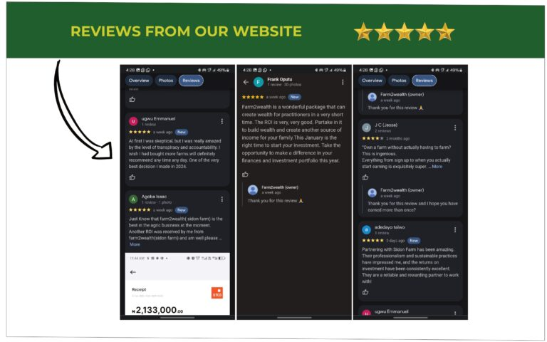
Farm2wealth is a subsidiary of our company created for only one purpose…
To help you own farmland and earn consistent passive income with zero farmwork.
Now, here's what that really means:
Right now, Farm2Wealth is the only farming company in Nigeria offering this kind of hands-off, guaranteed
farming income.
Allowing you to make farmer's kind of money without farming and living your normal lifestyle while your income grows.
Our bigger mission is to make wealth through farming accessible to you and to help you build consistent, lifelong passive income.
Imagine This For a Second…
You grab your piece of farmland today and start receiving consistent payouts of at least ₦30,000, ₦54,000, or ₦186,000 every 60 days.
Available Farmlands to Profit From Now…
Cassava Farm
When you buy cassava farmland, you're buying a matured cassava farm.
Then we havest and process it into garri for you.
Once the garri is ready we sell it and you receive your profit payout after 60 days of purchase based on the size of your plot. Subsequent payout after the first payout is due within 30 to 45 days.
Whether you buy 1 plot or scale up to multiple plots, your profits grow without you doing a single thing.
With at least ₦104,000, you can own 1 plot of cassava and receive an estimated profit of ₦10,000 - ₦30,000 in 60 days.
You can also decide to scale to:
3 plots (₦312,000) for an estimated profit of ₦54,000 to ₦93,000 every 60 days.
1 acre (₦624,000) for an estimated profit of ₦108,000 to ₦186,000 every 60 days.
1 hectare (₦1,560,000) for an estimated profit of 270,000 to 465,000 every 60 days
Disclaimer: Returns may vary based on market conditions.
Timber Farm
In our timber partnership, you're subscribing to a timber farming project that guarantees you 40% profit on your capital every 60 days.
This isn't a one-off return; you earn this same profit consistently for the next 6 months.
See the packages:
-
a. Timber (Mini): NGN1,000,000
Estimated Profit is up to NGN 350,000 every 60 days - b. Timber (Basic): NGN 2,000,000
Estimated profit is up to NGN 400,000 every 60 days - Timber (Premium): NGN 4,000,000
Estimated profit is up to NGN1,600,000 every 60 days - Timber (Enterprise): NGN 12,000,000
Estimated profit is up to NGN4,800,000 every 60 days
Profit on Timber is every 60 days
Disclaimer: Returns may vary based on market conditions.
Important: Farmlands are limited and taken fast.
If you're serious about earning steady passive income, this is your chance to grab it before it's gone.